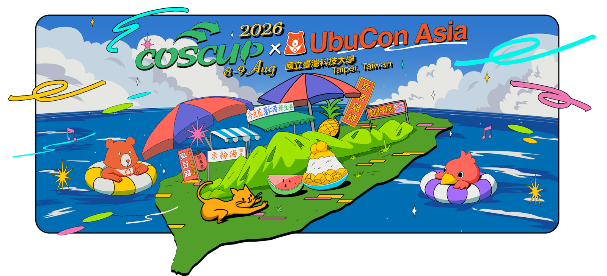

正在讀取 COSCUP 2026 議程資料… Loading the COSCUP 2026 program… COSCUP 2026 のプログラムを読み込んでいます… COSCUP 2026 프로그램을 불러오는 중…
選擇議程，留下回饋 Choose a session and share feedback セッションを選んでフィードバック 세션을 선택하고 피드백 남기기


正在讀取 COSCUP 2026 議程資料… Loading the COSCUP 2026 program… COSCUP 2026 のプログラムを読み込んでいます… COSCUP 2026 프로그램을 불러오는 중…